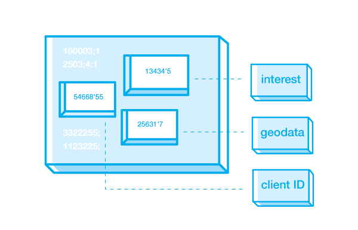
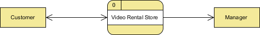
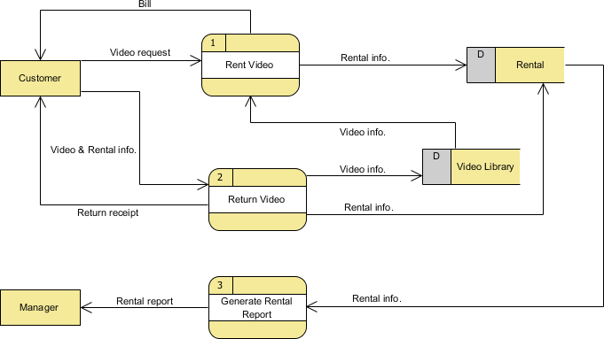

Data, Data Flow and DBMS
Instructor: Chris Fulton
Learning Agenda
- Understanding the importance of data
- Why is data important?
- Data as Information, Knowledge, Wisdom, Intelligence
- Data Building Blocks
- Data Building Blocks Activity
- Data Flow Diagram (DFD)
- Elements of DFD - Terminology, Shapes and Tools (Activity)
- Rules of Data Flow
- DFD Levels/Layers - Examples
- Database Management System (DBMS)
- What is a DBMS - Types of DBMS
- Database Models - Hierarchial, Network, Relational, Object-Oriented
- Advantages of DBMS, Structural Dependence and Structural Independence
- Jobs and Occupational Outlook
What is Raw Data?
Raw Data

Data
- Data - Consist of raw facts
Raw Data
- Raw Data - indicates that the facts have not yet been processes to reveal their meaning.
"The purpose of collecting raw data is to extract meaning"
Why Collect Data?
Information

- Information - Organizing data to reveal patterns or making forcast using statistical modeling.
What is Raw Data?
"To reveal meaning, information requires context"
What does Information provide?
Knowledge

- Knowledge - The body of information and facts about a specific subject. Knowledge implies familiarity, awareness, and understanding of information as it applies to an environment.
Insight

- Insight - Connecting dots for developing certain level of intelligence in the analyzed dataset

Understanding the differenct between data, information and knowledge helps drives database design.
Data Blocks Activity
MPLSRenters.com is a website that allows prospective apartment renters to create a profile and have high-end luxury apartments make offers to prospective renters. What is a data point we might want to collect on a prospective renter that would provide future insight on prospective renters.
Data
Information
Knowledge
Data Flow Diagrams (DFD)
Understanding DFD's
Which of the options below is the best definition of a Data Flow Diagram?
Understanding DFD's
Which of the following items is not typically found in a DFD?
Understanding DFD's
Typically, how many levels can you depict for a DFD?
Data Flow Diagram Elements

Processes
the activities carried out by the system which use and transform information
Data-flows
the data inputs to and outputs from to these activities
External Entities
the sources from which information flows into the system and the recipients of information leaving the system
Data stores
where information is stored within the system
Different Levels of DFD
Context DFD or Level 0
present an overview of the system and its interaction with the rest of the “world”
Level 1
present a more detailed view of the system than context diagrams, by showing the main sub-processes and stores of data that make up the system as a whole
Level 2
data-flow diagram can be decomposed (“exploded”) into a more detailed model a level lower in the hierarchy
Context diagram (level 0)
Level 1 diagram
Understanding DFD's
Which of the following options is not true?
Database Management Systems (DBMS)
Introducting the database
Shared, integrated computer structure that stores a collection of:
End-user data – Raw facts of interest to end user.
Metadata – Data that describes data; describes data characteristics and relationships.
Database management system (DBMS)
Collection of programs
Manages the database structure
Controls access to data stored in the database.
Explanation of Databases
Centradlized Database
Data is located at a single site. Data Centralization is becoming less popular due to:
Variety of Client Devices; Social, Mobile, and Embedded Technology, Latency Reduction - Leveraging the distributed computing technology with parallel processing techniques transform the landscape and reduce latency
Distributed Database
Data is distributed across different sites
Cloud Database
Created and maintained using cloud data services that provide defined perform ance m easures for the database
Operational Database
Designed to support a com pany’s day-to- day operations
Analytical database
Stores historical data and business metrics used exclusively for tactical or strategic decision making
Business intelligence
Captures and processes business data to generate information that support decision making
DBMS Overview